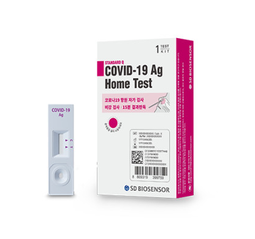

|  |
COVID-19Ag 홈 테스트 SD BIOSENSOR |
|
| 종류 | 코로나 자가 검사 키트 | |
| 판매단위 | (1회분) | |
| 가격 | 4000원 | |
| 플랫폼 | 자가 검사 키트 |
| 연령 | |
| 성상 | 검사용 디바이스, 용액통 & 노즐캡, 멸균면봉, 사용설명서 & 퀵가이드 |
| 효능 효과 | 1. 감염체 진단 면역검사시약 호흡기감염 증상이 있는 개인이 비강 도말 검체에서 면역크로마토그래피법으로 바이러스 항원의 존재 여부를 검사하는데 보조적으로 사용하는 체외진단의료기기 ※호흡기 감염 증상이 있거나 감염이 의심되는 경우에는 반드시 PCR 검사를 최우선적으로 실시해야 하며, 동 검사는 PCR 검사를 대체할 수 없습니다. 2. 검체채취용도구 질병 검사 등을 위하여 짧은 시간 안에 구강, 비강, 이강 또는 항문에서 체액, 분비물 등을 채취하는 도구. 변봉 형태 등이 있다. |
| 사용 횟수 | 2회 |
| 검체 수집 및 준비방법 |
1. 깨끗하게 손을 씻으십시오. 2. 용액통 & 노즐캡 봉투를 뜯고 용액통의 뚜껑을 벗깁니다. 3. 함께 동봉된 검체채취용도구 (멸균 면봉)의 포장을 개봉합니다. 4. 검체채취용도구 (멸균 면봉)을 콧구멍의 약 1.5cm 안쪽으로 삽입하고 비강 벽에 대고 10회 이상 회전 시킵니다. 5. 검체채취용도구 (멸균 명봉)을 조심스럽게 콧구멍 밖으로 빼냅니다. 6. 같은 검체채취용도구 (멸균 면봉)를 다른 콧구멍에 넣어 4) ~ 5) 과정을 반복합니다. |
| 검사 과정 | 1. 채취한 검체가 묻은 면봉을 용액통 (300ul)에 담궈 10회 이상 휘젓습니다. 2. 면봉을 천천히 빼내며 용액통 양옆을 눌러 흡수된 검체 혼합액을 충분히 짜냅니다. 3. 용액통에 노즐캡을 눌러 닫습니다. 4. 검사용 디바이스의 검체 점적 부위에 검체 혼합액 4방울을 떨어뜨립니다. 5. 검사결과는 15분 후 확인 하며, 30분 이후 결과는 신뢰하지 않습니다. [검체채취용도구] - 복합조합품목 의료기기, 수신 20-1041호, 모델명 : 96000G |
| 사용 전 준비사항 | 제품의 유효기간을 확인하고 제품 및 포장 상태를 확인한다. 유효기간이 경과하거나 포장이 파손된 제품은 사용하지 않는다. |
| 사용방법 | 1. 제품의 포장을 뜯는다. 제품의 손잡이 부분을 잡고 꺼낸다. 2. 제품의 손잡이를 잡고 검체를 채취하고자 하는 부위에서 검체를 채취한다. 3. 손잡이를 몇 번 좌우 방향으로 돌려 검체가 충분히 채취되도록 한다. 4. 검체 채취 후 즉시 시료 보관 용기에 넣는다. |
| 결과 판정 | 사용설명서를 참고하여, 결과 해석을 진행한다. ＊반드시 의료전문의가 본 검사결과 및 임상 소견, 다른 임상 결과를 바탕으로 진단해야 합니다. ＊* 선이 희미하더라도 라인은 존재하는 것으로 간주됩니다. |
| 사용 후의 보관 및 관리방법 | 일회용 제품이므로 사용 후 폐기물 관리법에 의해 폐기하며, 재사용을 금한다. ("재사용 금지") |
| 저장 방법 | 키트를 2-30℃에 직사광선을 피하여 보관하십시오. 키트의 구성품들은 외부 상자에 인쇄된 유효 기간까지 사용하실 수 있습니다. 키트를 냉동보관 하지 마십시오. |